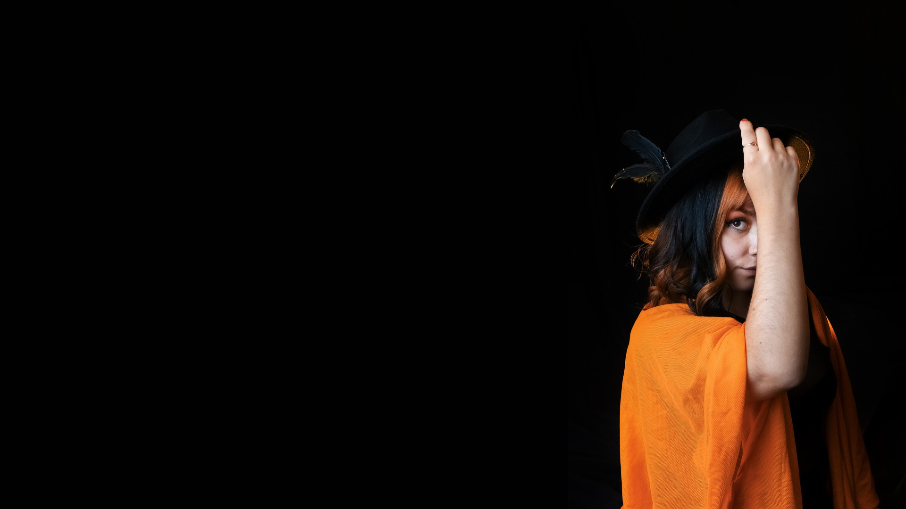

Theri Katherine
Fotógrafa Profesional
y Artista visual digital


Sobre mí
Transformo tus ideas en imágenes que venden, conectan y destacan.

Fotógrafa y artista visual digital
Soy fotógrafa y creadora visual especializada en proyectos personalizados, haciendo que cada detalle esté pensado estratégicamente para potenciar tu marca o concepto.
- Teléfono: +56 9 866 714 99
- Ciudad: Los Andes, Valparaíso. Chile
- Email: theri.katherine@gmail.com
- Freelance: Disponible
Ofrezco servicios de fotografía y creación visual con un enfoque moderno, integrando precisión y creatividad para lograr resultados que no pasan desapercibidos. Trabajo de forma cercana contigo para entender exactamente lo que necesitas y convertirlo en contenido visual atractivo, coherente y listo para destacar. Si buscas algo más que "solo fotos" y quieres una identidad visual que realmente marque la diferencia, estás en el lugar correcto.
Años de trabajo
Habilidades
Domino los fundamentos del manejo de cámaras réflex, incluyendo el control de la apertura del diafragma, la velocidad de obturación y la sensibilidad ISO. Estos conocimientos me permiten adaptar cada captura a las condiciones de iluminación, controlar la profundidad de campo y conseguir imágenes que transmitan la intención visual de cada proyecto.
Analizo cada proyecto fotográfico considerando su objetivo, concepto, público y estilo visual. Desde la planificación de la sesión hasta la selección de las fotografías finales, busco mantener una narrativa coherente, cuidar los detalles y entregar resultados que respondan a las necesidades de cada cliente.
Desarrollo imágenes desde la planificación hasta la edición final, considerando la composición, la iluminación, el encuadre y la dirección visual. Trabajo en diferentes áreas, como retratos, maternidad, cosplay, naturaleza, eventos y fotografía de productos, adaptando las técnicas y el estilo a las características de cada sesión.
Aplico los principios de la teoría del color para crear imágenes equilibradas, expresivas y visualmente atractivas. Utilizo la armonía cromática, los contrastes y la temperatura del color para reforzar las emociones, destacar elementos importantes y construir una identidad visual coherente con el concepto de cada proyecto.
Realizo la postproducción fotográfica mediante ajustes de iluminación, exposición, contraste, color y nitidez, cuidando que cada imagen conserve su esencia y calidad visual. A través de la edición y el retoque digital, busco potenciar los detalles, reforzar la intención artística y conseguir un acabado profesional coherente con el estilo de cada proyecto.
Creo contenido visual que combina fotografía, edición y diseño para comunicar ideas de manera atractiva y efectiva. Desarrollo propuestas adaptadas a redes sociales, marcas y proyectos personales, integrando composición, tipografía, color y recursos gráficos para generar piezas visuales con personalidad y una identidad reconocible.
Soy fotógrafa y creadora visual especializada en proyectos personalizados, donde cada detalle está pensado estratégicamente para potenciar tu marca o concepto. Mi estilo combina la elegancia del negro (profesionalismo y precisión), la claridad del blanco (orden y enfoque) y la energía del naranjo (creatividad e impacto), logrando resultados visuales que no pasan desapercibidos.
Ofrezco servicios de fotografía, diseño visual y productos personalizados, con un enfoque moderno influenciado por el mundo gamer y digital. Trabajo de forma cercana contigo para entender exactamente lo que necesitas y convertirlo en contenido visual atractivo, coherente y listo para destacar en redes o plataformas digitales.
Si buscas algo más que “solo fotos” y quieres una identidad visual que realmente marque diferencia, estás en el lugar correcto.